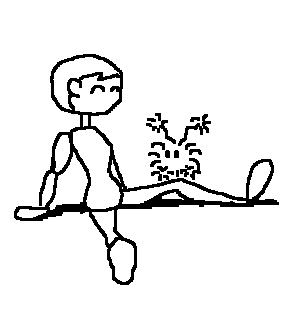

|

|
Authors
This version of Pictorial Consequences was written by Gregory McIntyre and Lucy Ding. It originally started as a project for Greg to teach Lucy how to code in Java.
Lucy loves word games. She always has.
She learned Pictorial Consequences from a book and immediately tried to con as many of her friends as possible into playing the game.
But friends are not always available or ready to play pointless, although extremely fun, games in the small hours of the morning. Understandably, Lucy considered it a great pity that she could not play Pictorial Consequences with her internet friends as well.
Thus when Lucy wanted to learn to program in Java, Pictorial consequences seemed like an excellent project to start on.
A medical student by trade and not well versed in programming, Lucy wasn't exactly the brains trust of this project. She was, however, far more enthuaiastic about it.
Lucy programmed where she could and poked and prodded Greg where she had to.
Gregory McIntyre
Software Engineering student by trade, Greg is the know how behind this project.
This project was completed due to the following scenario: Lucy looks at Greg with big puppy dog eyes and says, "Will you help me with Pictorial Consequences?/Teach me how to do sockets!/Make it work!/Greeeeg... it doesn't work.../I liiike you!". Greg sighs, stops what he's doing and spends the next few hours in a nightmare land of unexplained socket exceptions, concurrency control, race conditions, bizarre Java API decisions and crying girlfriends.
In his spare time, Greg likes to
- write lists,
- roleplay,
- code in Ruby, XSLT and C++,
- play computer games repeatedly (the good ones, I tells ye!),
- correct other people's grammar,
- split large paragraphs up.